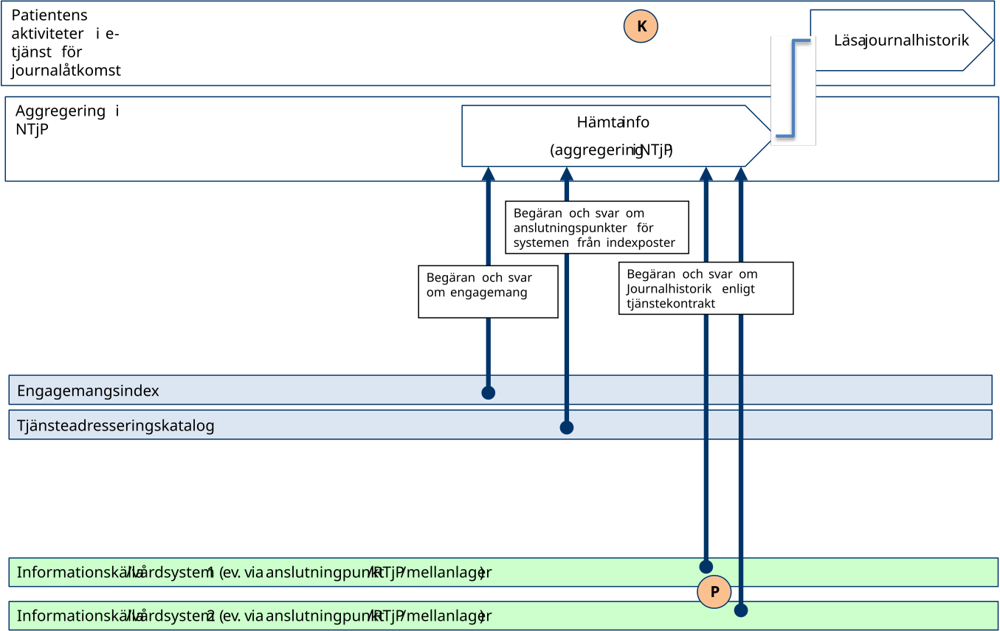
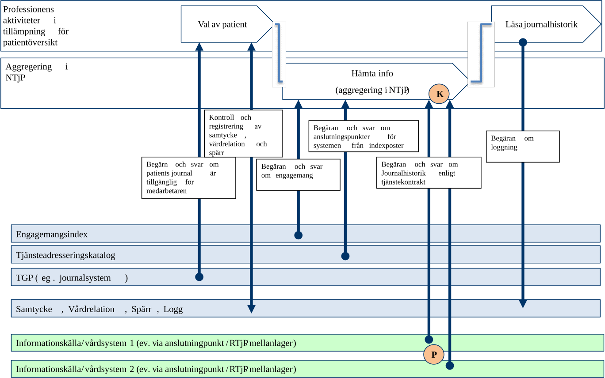
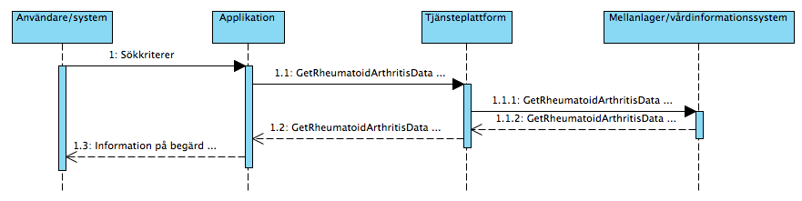

clinicalprocess: healthcond: rheuma — Reumatismdata
1.0.0 - draft
clinicalprocess: healthcond: rheuma — Reumatismdata - Local Development build (v1.0.0) built by the FHIR (HL7® FHIR® Standard) Build Tools. See the Directory of published versions
I detta avsnitt beskrivs hur T-boken tillämpats i tjänstedomänen. Avsnittet syftar till att ge läsaren överblick och förståelse. Avsnittet innehåller inga regler, men ger ett sammanhang för de regler som beskrivs i övriga delar av dokumentet. Tjänsterna för beskrivning av hälsorelaterade tillstånd erbjuder sökning av information i vård- och omsorgsgivarnas system för patientadministration och vårddokumentation. Utgångspunkten för tjänsterna i denna tjänstedomän är i första hand patientens behov av direktåtkomst till sin vård- och omsorgshistorik inom reumatismområdet sett ur ett nationellt eller ett regionalt perspektiv. Syftet generellt är att historisk information sammanställs från det eller de källsystem där det finns historik via s.k. aggregerande tjänster, snarare än att begära information från ett specifikt system eller en specifik verksamhet. Emellertid är tjänsterna i denna tjänstedomän för närvarande inte aktuella att representera även med aggregerande tjänster (se [R1] Arkitekturella beslut, avsnitt 2.2). Tjänstekontrakten erbjuder möjlighet att nå information från ett specifikt system eller en specifik verksamhet. Behovet av att rikta en fråga till ett specifikt system uppstår främst när tjänstekonsumenten också är prenumerant på notifieringar från engagemangsindex och på det sättet (via ProcessNotification) får information om en händelse i ett specifikt system. Det är då ändamålsenligt att adressera det specifika systemet. Följande flödesmodeller beskriver översiktligt hur tjänstekontrakten är tänkta att användas. Tjänstekonsument (K) och tjänsteproducenter (P) är markerade i figurerna.
Nedanstående diagram visar hur flödet principiellt set ser ut när information ur kontraktet efterfrågas och hanteras. Notera att de principiella exemplen även visar hur aggregerande tjänst används. Emellertid är tjänsterna i denna tjänstedomän för närvarande inte aktuella att representera även med aggregerande tjänster (se [R1] Arkitekturella beslut, avsnitt 2.2).

Figur 1. Exempel: Adressering vid anrop till aggregerande tjänst från patienttjänst (t.ex. från Mina Vårdkontakters tjänst för journalåtkomst)
Figur 2. Exempel: Adressering vid anrop till aggregerande vårdgivartjänst (t.ex. från NPÖ-tillämpningen)| Namn/beteckning | Beskrivning alt. referens |
|---|---|
| Patienten | Den patient som vill få tillgång till sina reumatismdata. |

Figur 3 Sekvensdiagram över sökning efter reumatismdata.| Namn | Beskrivning |
|---|---|
| Användare/system | Den/det som utför själva handlingen. |
| Applikation | Det system som används för att konsumera information. Dvs det system som hämtar information som finns registrerad i andra system |
| Tjänsteplattform | Tjänsteplattformen är ett lager som slussar information vidare (som har sin egna interna process) |
| Mellanlager | Ett system som kan finnas mellan ett källsystem och en annan applikation. Kan användas för att lagra information för uppföljning. |
| Vårdinformationssystem | Det system som i detta fall utgör källsystemet som vårdpersonal direkt registrerar/uppdaterar/raderar information i. |
Följande tabell specificerar vilka kontrakt som är obligatoriska att realisera för respektive flöde.
| Tjänstekontrakt | Reumatismdata |
|---|---|
| GetRheumatoidArthritisData | X |
Tjänstedomänen tillämpar system-adressering, det förutsätter att tjänstekonsumenten känner till källsystemets HSA eller genom att tjänstekonsumenten är producent för Engagemangsindex notifieringskontrakt (ProcessNotification). Notifieringen innehåller information om en händelse rörande en patients information i ett specifikt källsystem. Genom att använda informationen om källsystemets HSA-id kan tjänstekonsumenten direktadressera källsystemet i syfte att hämta information om den händelse som just notifierats för patienten. Adressering sker i enlighet med RIV Tekniska Anvisningar Översikt, Rev PD2, avsnitt 8.3, där mer information kan hittas.
| Åtkomstbehov för patientens journalhistorik | Logisk adress |
|---|---|
| För en huvudman/region | Huvudmannens/regionens HSA-id |
| För ett källsystem | Källsystemets HSA-id |
Aggregering används ej i denna eller tidigare versioner, alla frågemeddelanden dirigeras direkt till källsystemet baserat på dess HSA-id som anges som logisk adress. Se sektion Uppdatering av engagemangsindex för regelverk kring notifiering via engagemangsindex.